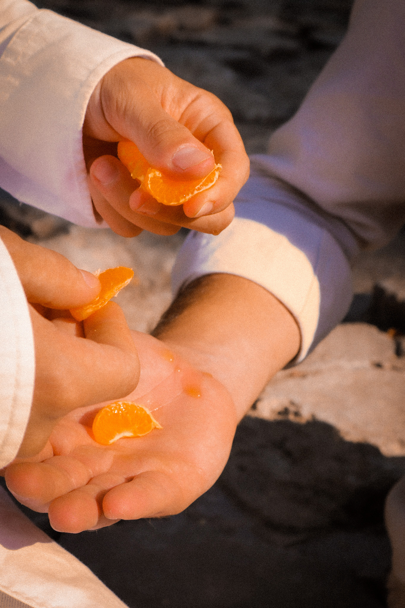

spring time
we dance around
where you go, i follow
we spin around
in a circle in the south
i have no idea where you're going
the sky is a beige gold
and the light
the light is pouring
the road is long and repeats itself
like murmurs going nowhere
you look at the road with stern eyes
but i can only look at you
the bridge of your nose
the stubble you try to shave
your warm hand carves into mine
engraved, like leather
where you go, i follow
you have so much you need to do
but not here
it's a tired afternoon
here, where you hold me
my kiss is the crest
you wear boldly on your chest
you're barely awake
i copy your breaths
in and out
in and out
in and out
nothing left for me
except a warm hand around my waist
you'd do anything to hold me
i am delicate to you
the way you love
its so loud, its screaming
god is an angry god
sometimes
in the thick of an argument
god wins
and i have to beg
for him to remember me
before he condemns me
he showed me a vision
of Nazareth, and crucifixions
and bigger things than me
bigger things than us all
spider webs of fate
cobwebs for antiquity
god sat me down one night
the martyr loves everyone
but he loves me most
foolish boy
he's made for pretty things
stronger things
he can only love me for
some time
in the throws of may
you saw me rust
i couldn't control myself
i took a bottle off the highest shelf
and aimed for the belt
i'm a sadist angry
i'm so volatile,
you're metahuman
you're too kind
i can never leave
well enough alone
you never left my side
that night
where i go, you follow
i'm not a good disciple
i think
i look for your eyes
some things are worth protecting
a cause a life
you
i break so easy
god is a jealous god
and he realized the difference
between breaking and broken
the damsel and the helpless
god doesn't understand
i don't want to be angry
or confused or sad
when the time's gone
and the martyrs gone
and i'm all alone
god sees fortune and fate
and he makes prophecies out of them
one boy destined to leave
the other
destined for a life in the sun
a life forever in the

summertime
you gave me a silver bracelet
for the solstice
you smile
i search for your eyes again
where they go, i follow
i take everything so seriously
i can't take the heat
i can't let go
you took me apart
i take you apart
for something to eat
raw meat and bread
grasping onto a lifeline
held by your legacy
delicate, i'm broken
you hold the pieces
and i cut your hands
you love me, despite yourself
i know you shouldn't
fate is never so graceful
drop me to the floor
i am god
and god is guilt
god saw me on a twenty story ledge
with tears in my eyes
a bottle in my hand
a vast void of lights and nothing
there, i saw my life flash
and it wasn't worth
the pound of flesh it cost
glass breaks at the highest shelf
god saved me then
he told me it's not my time
it was the martyrs
i would've died for him
i have to do the more painful thing
wintertime
dead of night
you screamed so loud
you didn't say anything
there's a cage on my heart
and i am free because of it
i know there is nothing beyond me
and i know that
we are dust beyond the
seasons,
and the spinning around
and the causes and
laying on your side, holding mine
the silver, gold sunlight
the roads less traveled
such a loving time
you're wasting so much time
life lost its meaning
at the invention of the cell phone
the camera, the wheel
but you're screaming
louder than you ever have before
you scream,
your eyes twist into a storm
i can't recover, my breath shakes
you mean so much to me
I'M A RIB IN YOUR SIDE
YOU REFUSE TO LET GO
you deserved better
than pitying
a boy with a fate below yours
the boy who could see god and destiny
and didn't want to
the boy with the devil inside him
i leave, and you bleed
in the morning,
in the heat of Golgotha
you won't find me
i'll kiss you once, again
forever